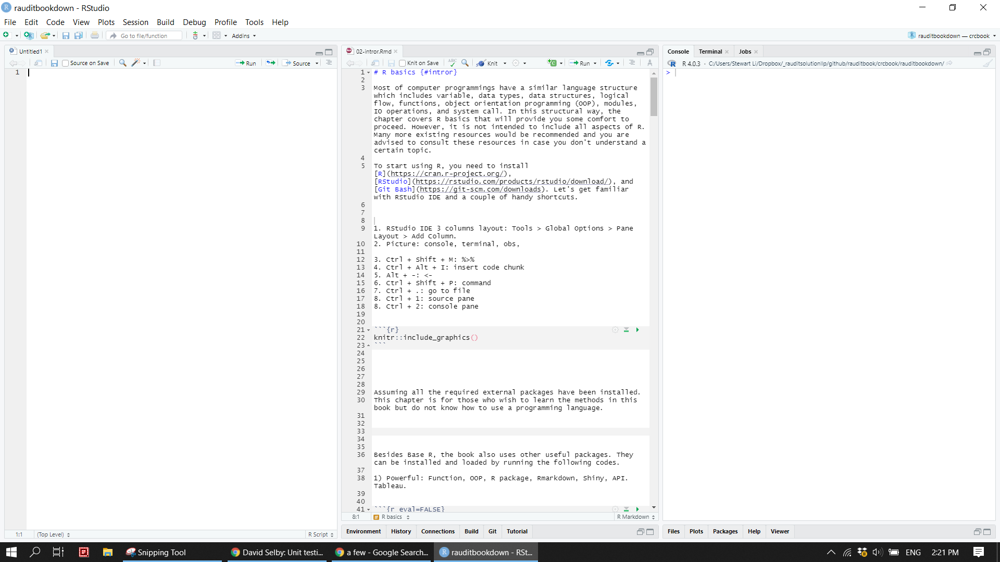
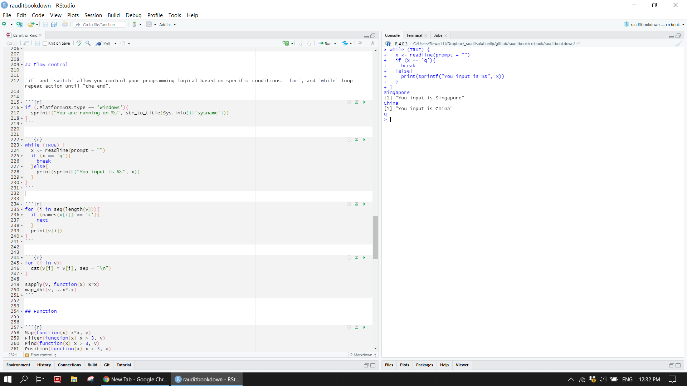
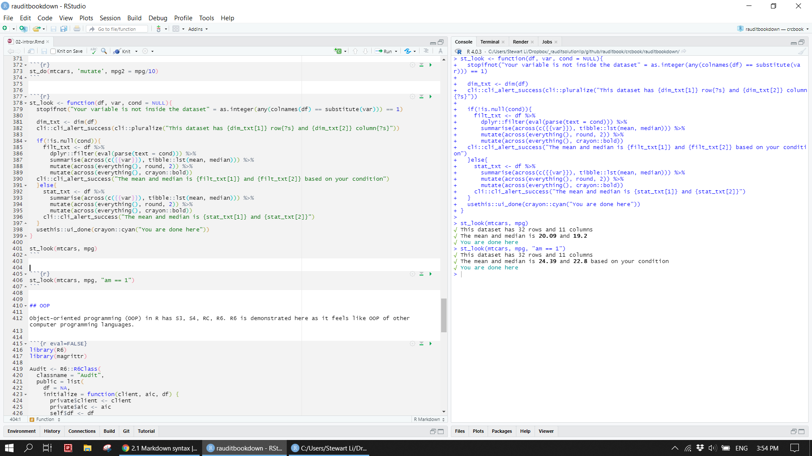
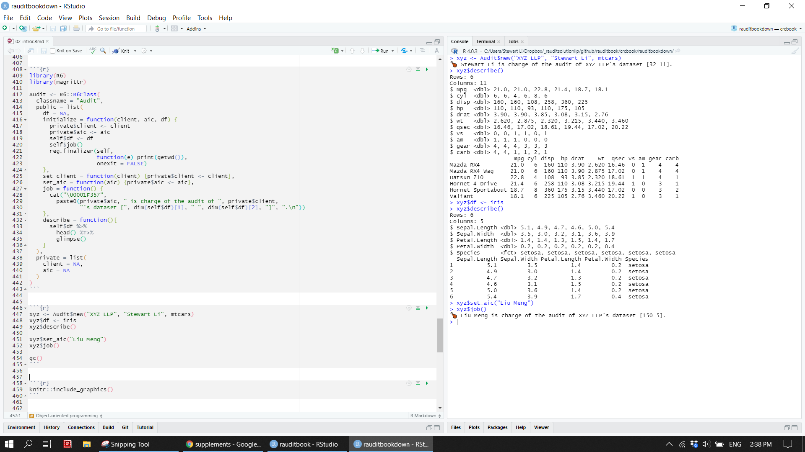
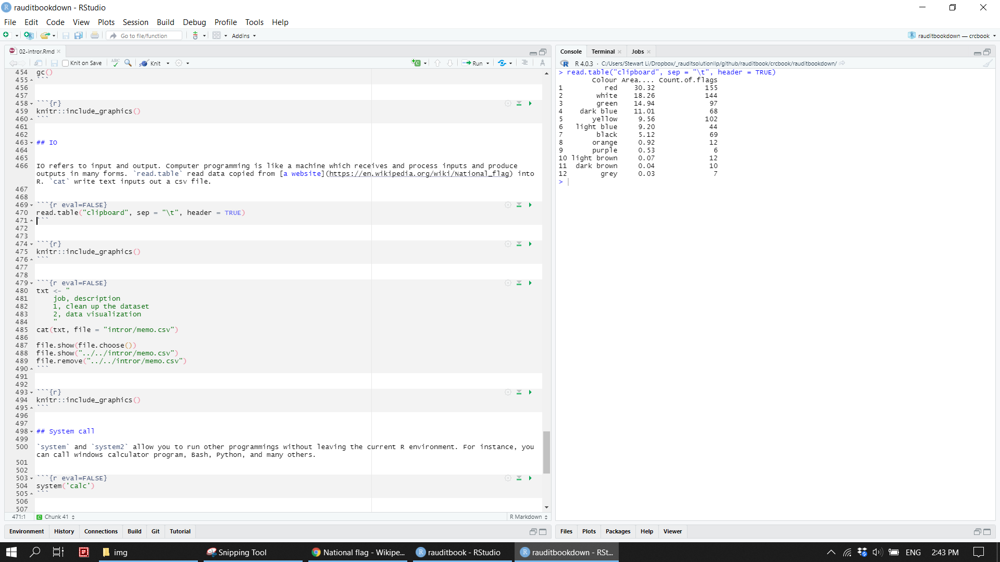
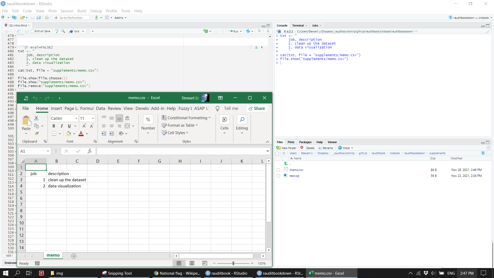
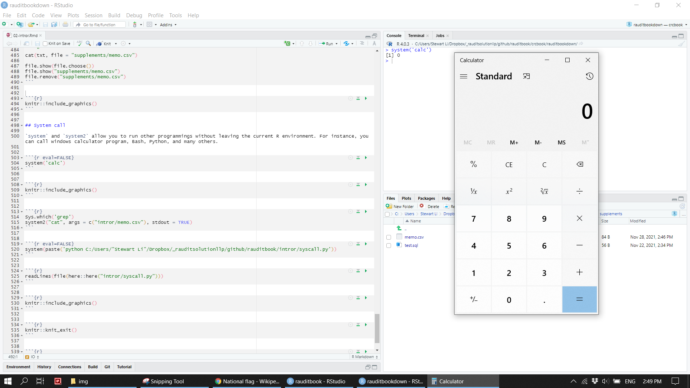
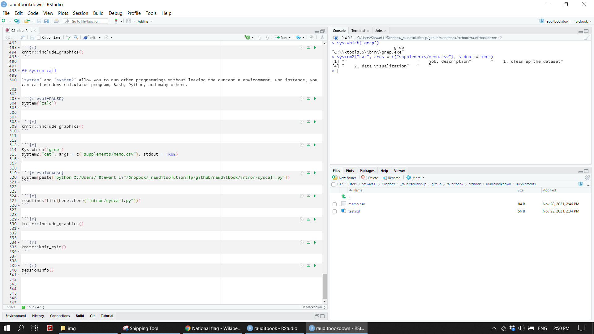
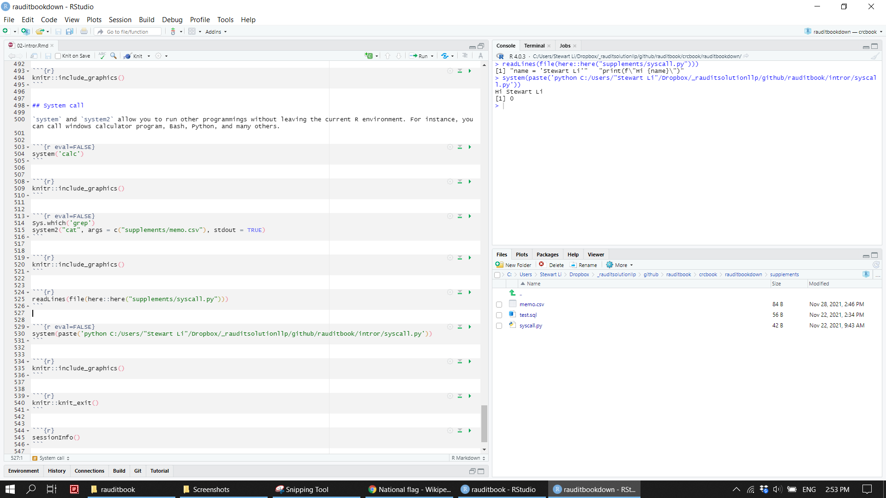

Chapter 3 R basics
Most of computer programmings have a similar language structure which includes variable, data types, data structures, logical flow, functions, object orientation programming (OOP), modules, IO operations, and system call. In this structural way, the chapter covers R basics that will provide you some comfort to proceed. However, it is not intended to include all aspects of R. Many more existing resources would be recommended and you are advised to consult these resources in case you don’t understand a certain topic.
3.1 Setup
To start using R, you need to install R, RStudio, and Git Bash. Let’s get familiar with RStudio IDE and a couple of handy shortcuts.
1. RStudio IDE 3 columns layout: Tools > Global Options > Pane Layout > Add Column
2. Move around among panes: Ctrl + 1, Ctrl + 2, Ctrl + 3, etc.
3. Command palette: Ctrl + Shift + P
4. Go to a file: Ctrl + .
5. Assignment operator <-: Alt + -
6. Magrittr pipe %>%: Ctrl + Shift + M
7. Insert code chunk in Rmarkdown document: Ctrl + Alt + I
knitr::include_graphics("img/rstudio_ide.png")
Besides Base R, the book also uses other packages. Running the following codes will install and load those packages. Assuming all the required external packages have been properly installed, we are good to go.
pkgs <- c("tidyverse", "data.table", "lubridate", "httr", "rvest", "usethis", "cli", "crayon",
"R6", "validate", "cowsay", "pdftools", "janitor", "skimr", "visdat", "naniar",
"DBI", "RSQLite", "dm", "dbplyr",
"knitr", "rmarkdown", "tinytex", "kableExtra", "DT", "formattable",
"unpivotr", "tidyxl", "readxl", "openxlsx",
"igraph", "ggraph", "tidygraph", "ggforce", "patchwork", "treemap", "table1",
"shiny", "shinyWidgets", "bslib", "thematic",
"tidytext", "wordcloud2", "collapsibleTree", "data.tree",
"benford.analysis", "corrplot", "widyr", "vcd", "psych")
pkg <- pkgs[which(!pkgs %in% installed.packages())]
lapply(pkg, install.packages)
lapply(pkgs, library)cowsay::say(what = "Let's start it!", by = "pig", what_color = "red", by_color = "green")>
> -----
> Let's start it!
> ------
> \
> \
> _//| .-~~~-.
> _/oo } }-@
> ('')_ } |
> `--'| { }--{ }
> //_/ /_/ [nosig]
> 3.2 Help
Names of all exported functions available in a installed package can be displayed. If any of names is strange to you, run ? or help to read documentation.
tibble(f = ls(getNamespace("base"))) %>%
dplyr::filter(str_detect(f, "^f")) > # A tibble: 53 x 1
> f
> <chr>
> 1 factor
> 2 factorial
> 3 fifo
> 4 file
> 5 file.access
> 6 file.append
> 7 file.choose
> 8 file.copy
> 9 file.create
> 10 file.exists
> # ... with 43 more rows?`[`
help(package = 'base')3.3 Variable
Common data types in R are character, double, integer, logical, complex, and raw. To store those data in a session, variables in the environment are created via <-, =, or assign. Variables subsequently can be read, updated, and deleted (CRUD). A specified operations run on variables are eval to spit out a final result.
a <- "helloworld"
b <- 3.2
c <- 3L
d <- TRUE
e <- 1+4i
f1 <- charToRaw(a)
f2 <- intToBits(d)assign("g", 100, envir = globalenv())
get("g", globalenv())> [1] 100ls()> [1] "a" "b" "c" "d" "df" "e" "f1" "f2" "g"g <- 102
eval(g + 2)> [1] 104An associated data type, bytecode, and size of variables can be checked by varying methods. One date type is converted to another via data cast.
typeof(a)> [1] "character"class(b)> [1] "numeric"mode(c)> [1] "numeric"storage.mode(c)> [1] "integer"str(d)> logi TRUEcompiler::compile(e)> <bytecode: 0x000000001f486830>tracemem(e) > [1] "<0000000021FE04F8>"object.size(e)> 64 bytesis.raw(f1)> [1] TRUEis.raw(f2)> [1] TRUEis.numeric(b)> [1] TRUEas.character(b) %>% class() > [1] "character"Strings is a special topic in any computer programming language and have many attributes and methods. For instance, you can manipulate and format strings through regular expression.
nchar(a)> [1] 10chartr("o", "-", a)> [1] "hell-w-rld"substr(a, 2, 4)> [1] "ell"sub("(w.*)", " ", a, ignore.case = TRUE)> [1] "hello "gsub("(w.*)"," ", a)> [1] "hello "substring(a, regexpr("(w.*)", a) + 1)> [1] "orld"formatC(c, width = 4, flag = "0")> [1] "0003"format(Sys.time(), format = "%U %w %H:%M:%S")> [1] "48 2 15:01:38"3.4 Data structure
Types of data structure in R are vector, data.frame, matrix, array, and list. vector, data.frame, and list are the most frequently used. vector is a building block of others. Simply call vector to initialize an empty vector.
character(3) %>% class()
numeric(3) %>% length()
integer(3)
logical(3)
vector("character", length = 3) Create a numeric vector and assign to a variable v. Run is and %in% to check if v is a vector and 3 is one of component of v. max and summary give you a statistic description of v. intersect and others are used to compare two vectors.
v <- c(rep(1:3, 3))
is(v, 'vector')> [1] TRUEis.vector(v)> [1] TRUEis.atomic(v)> [1] TRUEis.element(3, v)> [1] TRUE3 %in% v> [1] TRUEmax(v)> [1] 3summary(v)> Min. 1st Qu. Median Mean 3rd Qu. Max.
> 1 1 2 2 3 3intersect(v, c(1:15))> [1] 1 2 3setdiff(v, c(3:15))> [1] 1 2union(v, c(20:30))> [1] 1 2 3 20 21 22 23 24 25 26 27 28 29 30setequal(v, c(1:9))> [1] FALSEA vector can be a named vector. Thus, either index position or element name is used to slice a piece out of data and complete CRUD operations.
names(v) <- letters[1:9]
v['a'] > a
> 1v[4] > d
> 1v[8:9]> h i
> 2 3v[-1]> b c d e f g h i
> 2 3 1 2 3 1 2 3v['j'] <- 10
v['i'] <- 12
v> a b c d e f g h i j
> 1 2 3 1 2 3 1 2 12 10v[!names(v) %in% c('i')]> a b c d e f g h j
> 1 2 3 1 2 3 1 2 10data.frame is a tabular format and contains columns, rows, and cell values. As such, it is very similar in nature to a typical spreadsheet. It’s attributes include dimension (dim) , column names (colnames), and others. It also has multiple methods to compute statistics and manipulate (subset, within, and aggregate) data.
df <- data.frame(id = letters[1:10], x = 1:10, y = 11:20)
attributes(df)> $names
> [1] "id" "x" "y"
>
> $class
> [1] "data.frame"
>
> $row.names
> [1] 1 2 3 4 5 6 7 8 9 10attr(df, which = "class")> [1] "data.frame"dim(df)> [1] 10 3colnames(df)> [1] "id" "x" "y"rownames(df)> [1] "1" "2" "3" "4" "5" "6" "7" "8" "9" "10"head(df, 2);tail(df, 2)> id x y
> 1 a 1 11
> 2 b 2 12> id x y
> 9 i 9 19
> 10 j 10 20colMeans(df[2:3])> x y
> 5.5 15.5rowSums(df[2:3])> [1] 12 14 16 18 20 22 24 26 28 30cumsum(df$x)> [1] 1 3 6 10 15 21 28 36 45 55pmin(df$y, 15)> [1] 11 12 13 14 15 15 15 15 15 15df['y']> y
> 1 11
> 2 12
> 3 13
> 4 14
> 5 15
> 6 16
> 7 17
> 8 18
> 9 19
> 10 20df[df$y > 18, ]> id x y
> 9 i 9 19
> 10 j 10 20subset(df, y > 18, select = c(1:3))> id x y
> 9 i 9 19
> 10 j 10 20with(df, quantile(x, c(0.5, 0.75)))> 50% 75%
> 5.50 7.75within(df, {z = x + y})> id x y z
> 1 a 1 11 12
> 2 b 2 12 14
> 3 c 3 13 16
> 4 d 4 14 18
> 5 e 5 15 20
> 6 f 6 16 22
> 7 g 7 17 24
> 8 h 8 18 26
> 9 i 9 19 28
> 10 j 10 20 30aggregate(df[2:3], list(df$id > "f"), paste0)> Group.1 x y
> 1 FALSE 1, 2, 3, 4, 5, 6 11, 12, 13, 14, 15, 16
> 2 TRUE 7, 8, 9, 10 17, 18, 19, 20Matrix and Array can be create by their constructors respectively.
m <- matrix(1:6, nrow = 2, ncol = 3, byrow = TRUE, dimnames = list(c("X","Y"), c("A","B", "C")))
df_m <- as.data.frame(m)
dimnames(df_m)> [[1]]
> [1] "X" "Y"
>
> [[2]]
> [1] "A" "B" "C"df_m> A B C
> X 1 2 3
> Y 4 5 6t(df_m)> X Y
> A 1 4
> B 2 5
> C 3 6array(1:24, dim = c(2, 4, 3)) > , , 1
>
> [,1] [,2] [,3] [,4]
> [1,] 1 3 5 7
> [2,] 2 4 6 8
>
> , , 2
>
> [,1] [,2] [,3] [,4]
> [1,] 9 11 13 15
> [2,] 10 12 14 16
>
> , , 3
>
> [,1] [,2] [,3] [,4]
> [1,] 17 19 21 23
> [2,] 18 20 22 24List is able to contain any type of data and data structures. Run vector to create an empty list. Slice and CRUD operations on a list are similar as those mentioned above.
vector("list", length = 3)l <- list(df_m, df)
l[[2]]> id x y
> 1 a 1 11
> 2 b 2 12
> 3 c 3 13
> 4 d 4 14
> 5 e 5 15
> 6 f 6 16
> 7 g 7 17
> 8 h 8 18
> 9 i 9 19
> 10 j 10 20l[["df_m"]] <- c(13:19)
append(l, c(20))> [[1]]
> A B C
> X 1 2 3
> Y 4 5 6
>
> [[2]]
> id x y
> 1 a 1 11
> 2 b 2 12
> 3 c 3 13
> 4 d 4 14
> 5 e 5 15
> 6 f 6 16
> 7 g 7 17
> 8 h 8 18
> 9 i 9 19
> 10 j 10 20
>
> $df_m
> [1] 13 14 15 16 17 18 19
>
> [[4]]
> [1] 20l[4] <- NULL
l> [[1]]
> A B C
> X 1 2 3
> Y 4 5 6
>
> [[2]]
> id x y
> 1 a 1 11
> 2 b 2 12
> 3 c 3 13
> 4 d 4 14
> 5 e 5 15
> 6 f 6 16
> 7 g 7 17
> 8 h 8 18
> 9 i 9 19
> 10 j 10 20
>
> $df_m
> [1] 13 14 15 16 17 18 193.5 Control flow
if and switch (see 3.6) allow you to specify the predefined logical conditions. The expected outcome should be attained after run your script. for and while loop repeat a certain action until “the end.”
if (.Platform$OS.type == 'windows'){
sprintf("You are running on %s", str_to_title(Sys.info()['sysname']))
}> [1] "You are running on Windows"while (TRUE) {
x <- readline(prompt = "")
if (x == 'q'){
break
}else{
print(sprintf("You input is %s", x))
}
}knitr::include_graphics("img/while_loop.png")
for (i in seq(length(v))){
if (names(v[i]) == 'c'){
next
}
print(v[i])
}> a
> 1
> b
> 2
> d
> 1
> e
> 2
> f
> 3
> g
> 1
> h
> 2
> i
> 12
> j
> 10In the world of R, a couple of alternatives to for loop are often used due to simplicity and performance. In particular, apply family from base R and map family from purrr.
for (i in v){
cat(v[i] * v[i], sep = "\n")
}> 1
> 4
> 9
> 1
> 4
> 9
> 1
> 4
> NA
> 100sapply(v, function(x) x*x)> a b c d e f g h i j
> 1 4 9 1 4 9 1 4 144 100map_dbl(v, ~.x*.x)> a b c d e f g h i j
> 1 4 9 1 4 9 1 4 144 1003.6 Function
Functions usually take one or more arguments as inputs and return an one or more desired outputs. For instance, a high order function takes an anonymous function as an argument. A function is viewed as a series of operations represented by an abstract syntax tree (ast). Refer to Advanced R for details.
Map(function(x) x*x, v)> $a
> [1] 1
>
> $b
> [1] 4
>
> $c
> [1] 9
>
> $d
> [1] 1
>
> $e
> [1] 4
>
> $f
> [1] 9
>
> $g
> [1] 1
>
> $h
> [1] 4
>
> $i
> [1] 144
>
> $j
> [1] 100Filter(function(x) x > 3, v)> i j
> 12 10Reduce(paste, v, accumulate = TRUE)> [1] "1" "1 2" "1 2 3"
> [4] "1 2 3 1" "1 2 3 1 2" "1 2 3 1 2 3"
> [7] "1 2 3 1 2 3 1" "1 2 3 1 2 3 1 2" "1 2 3 1 2 3 1 2 12"
> [10] "1 2 3 1 2 3 1 2 12 10"args(Map)> function (f, ...)
> NULLformals(Map)> $f
>
>
> $...lobstr::ast(Map(function(x) x*x, v))> o-Map
> +-o-`function`
> | +-o-x = ``
> | +-o-`*`
> | | +-x
> | | \-x
> | \-<inline srcref>
> \-vComputer programming languages are very powerful because they allow users to write their own functions to meet their special needs. The following two examples illustrate how to write a function with switch and {{}} from rlang and use stopifnot for error handling.
st_do <- function(df, f, variable, ...){
switch (f,
select = df %>% select({{variable}}),
filter = df %>% dplyr::filter(mpg > 20),
mutate = df %>% mutate(...)
)
}
st_do(mtcars, 'select', variable = c(contains('p'), starts_with('a')))> mpg disp hp am
> Mazda RX4 21.0 160.0 110 1
> Mazda RX4 Wag 21.0 160.0 110 1
> Datsun 710 22.8 108.0 93 1
> Hornet 4 Drive 21.4 258.0 110 0
> Hornet Sportabout 18.7 360.0 175 0
> Valiant 18.1 225.0 105 0
> Duster 360 14.3 360.0 245 0
> Merc 240D 24.4 146.7 62 0
> Merc 230 22.8 140.8 95 0
> Merc 280 19.2 167.6 123 0
> Merc 280C 17.8 167.6 123 0
> Merc 450SE 16.4 275.8 180 0
> Merc 450SL 17.3 275.8 180 0
> Merc 450SLC 15.2 275.8 180 0
> Cadillac Fleetwood 10.4 472.0 205 0
> Lincoln Continental 10.4 460.0 215 0
> Chrysler Imperial 14.7 440.0 230 0
> Fiat 128 32.4 78.7 66 1
> Honda Civic 30.4 75.7 52 1
> Toyota Corolla 33.9 71.1 65 1
> Toyota Corona 21.5 120.1 97 0
> Dodge Challenger 15.5 318.0 150 0
> AMC Javelin 15.2 304.0 150 0
> Camaro Z28 13.3 350.0 245 0
> Pontiac Firebird 19.2 400.0 175 0
> Fiat X1-9 27.3 79.0 66 1
> Porsche 914-2 26.0 120.3 91 1
> Lotus Europa 30.4 95.1 113 1
> Ford Pantera L 15.8 351.0 264 1
> Ferrari Dino 19.7 145.0 175 1
> Maserati Bora 15.0 301.0 335 1
> Volvo 142E 21.4 121.0 109 1st_do(mtcars, 'filter')> mpg cyl disp hp drat wt qsec vs am gear carb
> Mazda RX4 21.0 6 160.0 110 3.90 2.620 16.46 0 1 4 4
> Mazda RX4 Wag 21.0 6 160.0 110 3.90 2.875 17.02 0 1 4 4
> Datsun 710 22.8 4 108.0 93 3.85 2.320 18.61 1 1 4 1
> Hornet 4 Drive 21.4 6 258.0 110 3.08 3.215 19.44 1 0 3 1
> Merc 240D 24.4 4 146.7 62 3.69 3.190 20.00 1 0 4 2
> Merc 230 22.8 4 140.8 95 3.92 3.150 22.90 1 0 4 2
> Fiat 128 32.4 4 78.7 66 4.08 2.200 19.47 1 1 4 1
> Honda Civic 30.4 4 75.7 52 4.93 1.615 18.52 1 1 4 2
> Toyota Corolla 33.9 4 71.1 65 4.22 1.835 19.90 1 1 4 1
> Toyota Corona 21.5 4 120.1 97 3.70 2.465 20.01 1 0 3 1
> Fiat X1-9 27.3 4 79.0 66 4.08 1.935 18.90 1 1 4 1
> Porsche 914-2 26.0 4 120.3 91 4.43 2.140 16.70 0 1 5 2
> Lotus Europa 30.4 4 95.1 113 3.77 1.513 16.90 1 1 5 2
> Volvo 142E 21.4 4 121.0 109 4.11 2.780 18.60 1 1 4 2st_do(mtcars, 'mutate', mpg2 = mpg/10)> mpg cyl disp hp drat wt qsec vs am gear carb mpg2
> Mazda RX4 21.0 6 160.0 110 3.90 2.620 16.46 0 1 4 4 2.10
> Mazda RX4 Wag 21.0 6 160.0 110 3.90 2.875 17.02 0 1 4 4 2.10
> Datsun 710 22.8 4 108.0 93 3.85 2.320 18.61 1 1 4 1 2.28
> Hornet 4 Drive 21.4 6 258.0 110 3.08 3.215 19.44 1 0 3 1 2.14
> Hornet Sportabout 18.7 8 360.0 175 3.15 3.440 17.02 0 0 3 2 1.87
> Valiant 18.1 6 225.0 105 2.76 3.460 20.22 1 0 3 1 1.81
> Duster 360 14.3 8 360.0 245 3.21 3.570 15.84 0 0 3 4 1.43
> Merc 240D 24.4 4 146.7 62 3.69 3.190 20.00 1 0 4 2 2.44
> Merc 230 22.8 4 140.8 95 3.92 3.150 22.90 1 0 4 2 2.28
> Merc 280 19.2 6 167.6 123 3.92 3.440 18.30 1 0 4 4 1.92
> Merc 280C 17.8 6 167.6 123 3.92 3.440 18.90 1 0 4 4 1.78
> Merc 450SE 16.4 8 275.8 180 3.07 4.070 17.40 0 0 3 3 1.64
> Merc 450SL 17.3 8 275.8 180 3.07 3.730 17.60 0 0 3 3 1.73
> Merc 450SLC 15.2 8 275.8 180 3.07 3.780 18.00 0 0 3 3 1.52
> Cadillac Fleetwood 10.4 8 472.0 205 2.93 5.250 17.98 0 0 3 4 1.04
> Lincoln Continental 10.4 8 460.0 215 3.00 5.424 17.82 0 0 3 4 1.04
> Chrysler Imperial 14.7 8 440.0 230 3.23 5.345 17.42 0 0 3 4 1.47
> Fiat 128 32.4 4 78.7 66 4.08 2.200 19.47 1 1 4 1 3.24
> Honda Civic 30.4 4 75.7 52 4.93 1.615 18.52 1 1 4 2 3.04
> Toyota Corolla 33.9 4 71.1 65 4.22 1.835 19.90 1 1 4 1 3.39
> Toyota Corona 21.5 4 120.1 97 3.70 2.465 20.01 1 0 3 1 2.15
> Dodge Challenger 15.5 8 318.0 150 2.76 3.520 16.87 0 0 3 2 1.55
> AMC Javelin 15.2 8 304.0 150 3.15 3.435 17.30 0 0 3 2 1.52
> Camaro Z28 13.3 8 350.0 245 3.73 3.840 15.41 0 0 3 4 1.33
> Pontiac Firebird 19.2 8 400.0 175 3.08 3.845 17.05 0 0 3 2 1.92
> Fiat X1-9 27.3 4 79.0 66 4.08 1.935 18.90 1 1 4 1 2.73
> Porsche 914-2 26.0 4 120.3 91 4.43 2.140 16.70 0 1 5 2 2.60
> Lotus Europa 30.4 4 95.1 113 3.77 1.513 16.90 1 1 5 2 3.04
> Ford Pantera L 15.8 8 351.0 264 4.22 3.170 14.50 0 1 5 4 1.58
> Ferrari Dino 19.7 6 145.0 175 3.62 2.770 15.50 0 1 5 6 1.97
> Maserati Bora 15.0 8 301.0 335 3.54 3.570 14.60 0 1 5 8 1.50
> Volvo 142E 21.4 4 121.0 109 4.11 2.780 18.60 1 1 4 2 2.14st_look <- function(df, var, cond = NULL){
stopifnot("Your variable is not inside the dataset" = as.integer(any(colnames(df) == substitute(var))) == 1)
dim_txt <- dim(df)
cli::cli_alert_success(cli::pluralize("This dataset has {dim_txt[1]} row{?s} and {dim_txt[2]} column{?s}"))
if(!is.null(cond)){
filt_txt <- df %>%
dplyr::filter(eval(parse(text = cond))) %>%
summarise(across(c({{var}}), tibble::lst(mean, median))) %>%
mutate(across(everything(), round, 2)) %>%
mutate(across(everything(), crayon::bold))
cli::cli_alert_success("The mean and median is {filt_txt[1]} and {filt_txt[2]} based on your condition")
}else{
stat_txt <- df %>%
summarise(across(c({{var}}), tibble::lst(mean, median))) %>%
mutate(across(everything(), round, 2)) %>%
mutate(across(everything(), crayon::bold))
cli::cli_alert_success("The mean and median is {stat_txt[1]} and {stat_txt[2]}")
}
usethis::ui_done(crayon::cyan("You are done here"))
}
st_look(mtcars, mpg)
st_look(mtcars, mpg, "am == 1")knitr::include_graphics("img/st_look.png")
3.7 OOP
Object-oriented programming (OOP) in R has S3, S4, RC, R6. R6 is demonstrated here as it feels like OOP of other computer programming languages.
library(R6)
library(magrittr)
Audit <- R6::R6Class(
classname = "Audit",
public = list(
df = NA,
initialize = function(client, aic, df) {
private$client <- client
private$aic <- aic
self$df <- df
self$job()
reg.finalizer(self,
function(e) print(getwd()),
onexit = FALSE)
},
set_client = function(client) {private$client <- client},
set_aic = function(aic) {private$aic <- aic},
job = function() {
cat("\U0001F357",
paste0(private$aic, " is charge of the audit of ", private$client,
"'s dataset [", dim(self$df)[1], " ", dim(self$df)[2], "]", ".\n"))
},
describe = function(){
self$df %>%
head() %T>%
glimpse()
}
),
private = list(
client = NA,
aic = NA
)
)xyz <- Audit$new("XYZ LLP", "Stewart Li", mtcars)
xyz$df <- iris
xyz$describe()
xyz$set_aic("Liu Meng")
xyz$job()
gc()knitr::include_graphics("img/r6.png")
3.8 IO
IO refers to input and output. Computer programming is like a machine which receives and process inputs and produce outputs in many forms. read.table read data copied from a website into R. cat write text inputs out a csv file.
read.table("clipboard", sep = "\t", header = TRUE) knitr::include_graphics("img/clipboard.png")
txt <- "
job, description
1, clean up the dataset
2, data visualization
"
cat(txt, file = "supplements/memo.csv")
file.show(file.choose())
file.show("supplements/memo.csv")
file.remove("supplements/memo.csv")knitr::include_graphics("img/cat_csv.png")
3.9 System
system and system2 allow you to run other programmings without leaving the current R environment. For instance, you can call windows calculator program, Bash, Python, and many others.
system('calc')knitr::include_graphics("img/calc.png")
Sys.which('grep')
system2("cat", args = c("supplements/memo.csv"), stdout = TRUE)knitr::include_graphics("img/bash.png")
readLines(file(here::here("supplements/syscall.py")))> [1] "name = 'Stewart Li'" "print(f\"Hi {name}\")"system(paste('python C:/Users/"Stewart Li"/Dropbox/_rauditsolutionllp/github/rauditbook/intror/syscall.py'))knitr::include_graphics("img/python.png")